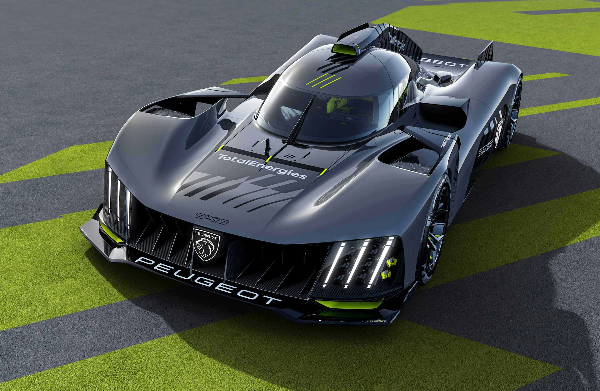
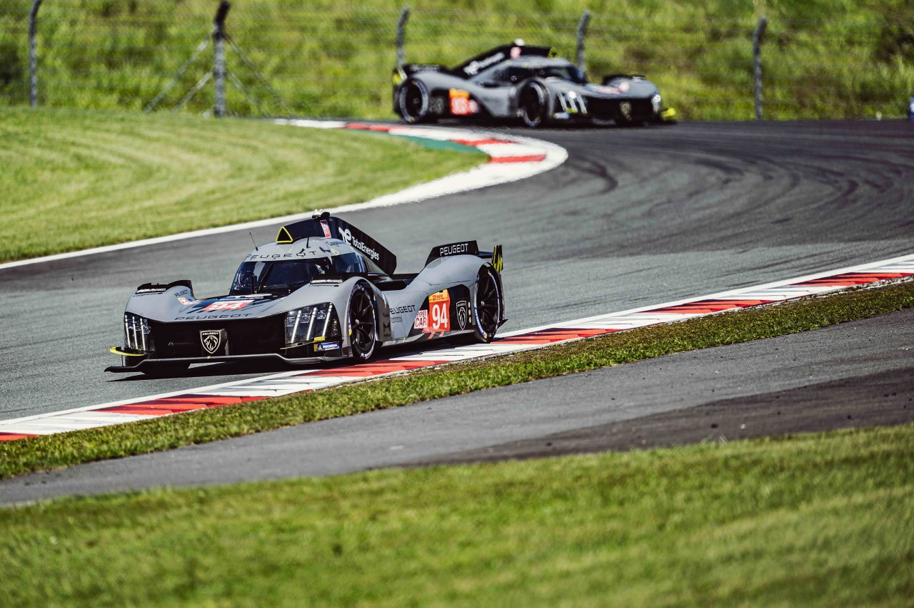
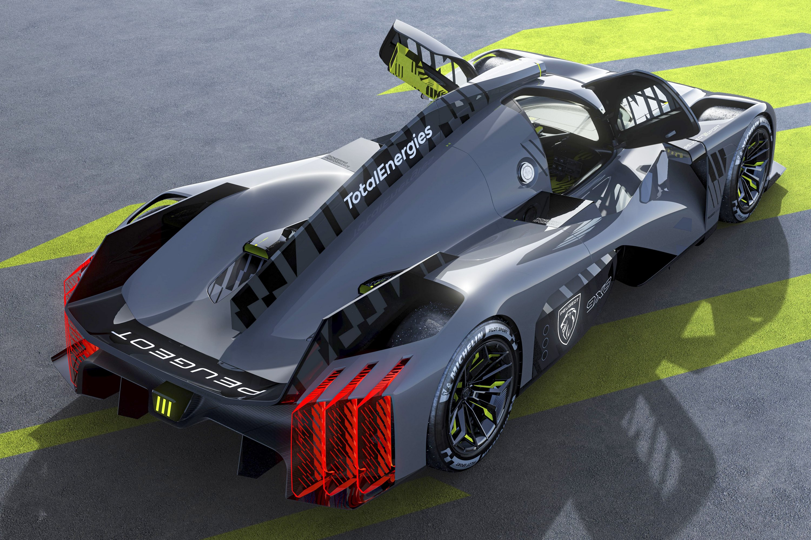

Les deux hypercar de peugeot sont équipées de V6 2.6L bi-turbo qui développent une puissance de 680ch pour 1030kg. Les voitures n°93 et n°94 seront comme la quasi totalité des hypercar 2023 hybride, elles s'élanceront en électrique puis passeront en thermique sur la piste. Peugeot a pris un risque sur l'aérodynamisme de ses voitures car elles ne sont pas équipées d'aileron arrière ce qui réduit le plaquage au sol de la voiture.
  Peugeot a déjà eu l'occasion de tester ses voitures car elles ont participé aux courses WEC (World Endurance Championship) qui ont suivis les 24h du mans. Cela a permis au constructeur de voir les points à améliorer ou à règler.